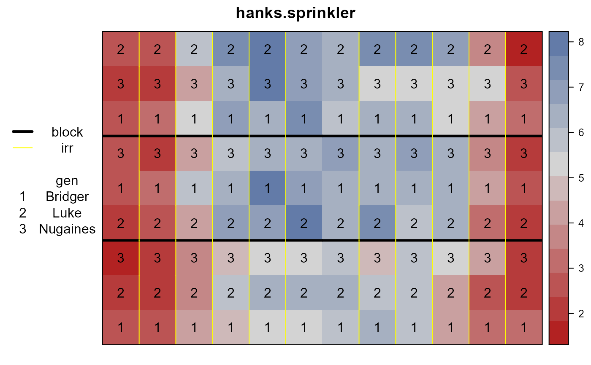
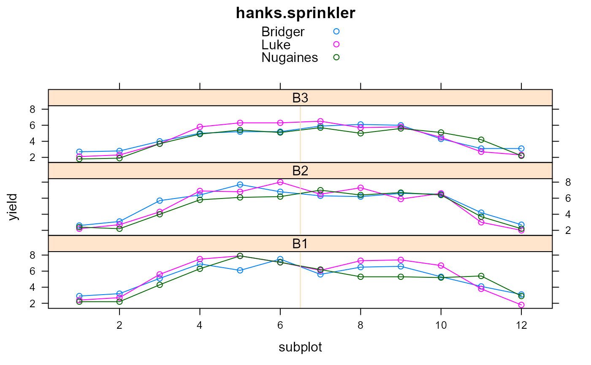

hanks.sprinkler.RdThree wheat varieties planted in 3 blocks, with a line sprinkler crossing all whole plots.
A data frame with 108 observations on the following 7 variables.
blockblock
rowrow
subplotcolumn
gengenotype, 3 levels
yieldyield (tons/ha)
irrirrigation level, 1..6
dirdirection from sprinkler, N/S
A line-source sprinkler is placed through the middle of the experiment (between subplots 6 and 7). Subplots closest to the sprinkler receive the most irrigation. Subplots far from the sprinkler (near the edges) have the lowest yields.
One data value was modified from the original (following the example of other authors).
Hanks, R.J., Sisson, D.V., Hurst, R.L, and Hubbard K.G. (1980). Statistical Analysis of Results from Irrigation Experiments Using the Line-Source Sprinkler System. Soil Science Society of America Journal, 44, 886-888. https://doi.org/10.2136/sssaj1980.03615995004400040048x
Johnson, D. E., Chaudhuri, U. N., and Kanemasu, E. T. (1983). Statistical Analysis of Line-Source Sprinkler Irrigation Experiments and Other Nonrandomized Experiments Using Multivariate Methods. Soil Science Society American Journal, 47, 309-312.
Stroup, W. W. (1989). Use of Mixed Model Procedure to Analyze Spatially Correlated Data: An Example Applied to a Line-Source Sprinkler Irrigation Experiment. Applications of Mixed Models in Agriculture and Related Disciplines, Southern Cooperative Series Bulletin No. 343, 104-122.
SAS Stat User's Guide. https://support.sas.com/documentation/cdl/en/statug/63347/HTML/default/viewer.htm#statug_mixed_sect038.htm
# \dontrun{ library(agridat) data(hanks.sprinkler) dat <- hanks.sprinkler # The line sprinkler is vertical between subplots 6 & 7 libs(desplot) desplot(dat, yield~subplot*row, out1=block, out2=irr, cex=1, # aspect unknown num=gen, main="hanks.sprinkler")libs(lattice) xyplot(yield~subplot|block, dat, type=c('b'), group=gen, layout=c(1,3), auto.key=TRUE, main="hanks.sprinkler", panel=function(x,y,...){ panel.xyplot(x,y,...) panel.abline(v=6.5, col='wheat') })# ---------------------------------------------------------------------------- ## This is the model from the SAS documentation ## proc mixed; ## class block gen dir irr; ## model yield = gen|dir|irr@2; ## random block block*dir block*irr; ## repeated / type=toep(4) sub=block*gen r; # ---------------------------------------------------------------------------- # asreml 3 libs(asreml,lucid) if( utils::packageVersion("asreml") < "4") { # asreml3 dat <- transform(dat, subf=factor(subplot), irrf=factor(irr)) dat <- dat[order(dat$block, dat$gen, dat$subplot),] m1 <- asreml(yield ~ gen + dir + irrf + gen:dir + gen:irrf + dir:irrf, data=dat, random= ~ block + block:dir + block:irrf, rcov= ~ block:gen:corb(subf, k=4)) libs(lucid) vc(m1) ## effect component std.error z.ratio constr ## block!block.var 0.2194 0.2393 0.92 pos ## block:dir!block.var 0.01768 0.03154 0.56 pos ## block:irrf!block.var 0.03539 0.03617 0.98 pos ## R!variance 0.285 0.05086 5.6 pos ## R!cor1 0.02802 0.1143 0.25 uncon ## R!cor2 0.005095 0.1278 0.04 uncon ## R!cor3 -0.3246 0.0905 -3.6 uncon ## # convert asreml correlations to SAS covariances ## round(.2850 * c(1, .02802, .005095, -.3246),4) # res var * (cor1, cor2, cor3) ## [1] 0.2850 0.0080 0.0015 -0.0925 } # asreml 4 libs(asreml,lucid) if( utils::packageVersion("asreml") > "4") { dat <- transform(dat, subf=factor(subplot), irrf=factor(irr)) dat <- dat[order(dat$block, dat$gen, dat$subplot),] # In asreml3, we can specify corb(subf, 3) # In asreml4, only corb(subf, 1) runs. corb(subf, 3) says: # Correlation structure is not positive definite m1 <- asreml(yield ~ gen + dir + irrf + gen:dir + gen:irrf + dir:irrf, data=dat, random= ~ block + block:dir + block:irrf, resid = ~ block:gen:corb(subf, 2)) lucid::vc(m1) # effect component std.error z.ratio bound # block 0.194 0.2231 0.87 P 0.5 # block:dir 0.02729 0.04959 0.55 P 0 # block:irrf 0.02275 0.0347 0.66 P 0.1 # block:gen:subf!R 0.3234 0.05921 5.5 P 0 # block:gen:subf!subf!cor1 0.169 0.09906 1.7 P 0.1 }#> Model fitted using the gamma parameterization. #> ASReml 4.1.0 Mon Jan 11 17:08:44 2021 #> LogLik Sigma2 DF wall cpu #> 1 -22.0631 0.331054 82 17:08:44 0.0 #> 2 -20.5511 0.353273 82 17:08:44 0.0 #> 3 -20.8457 0.496038 82 17:08:44 0.0 #> 4 -30.1543 0.850251 82 17:08:44 0.0 (3 restrained) #> Likelihood evaluation failed with fault 1005 ; trying with reduced updates#> Error in asreml(yield ~ gen + dir + irrf + gen:dir + gen:irrf + dir:irrf, data = dat, random = ~block + block:dir + block:irrf, resid = ~block:gen:corb(subf, 2)): Correlation structure is not positive definite# }